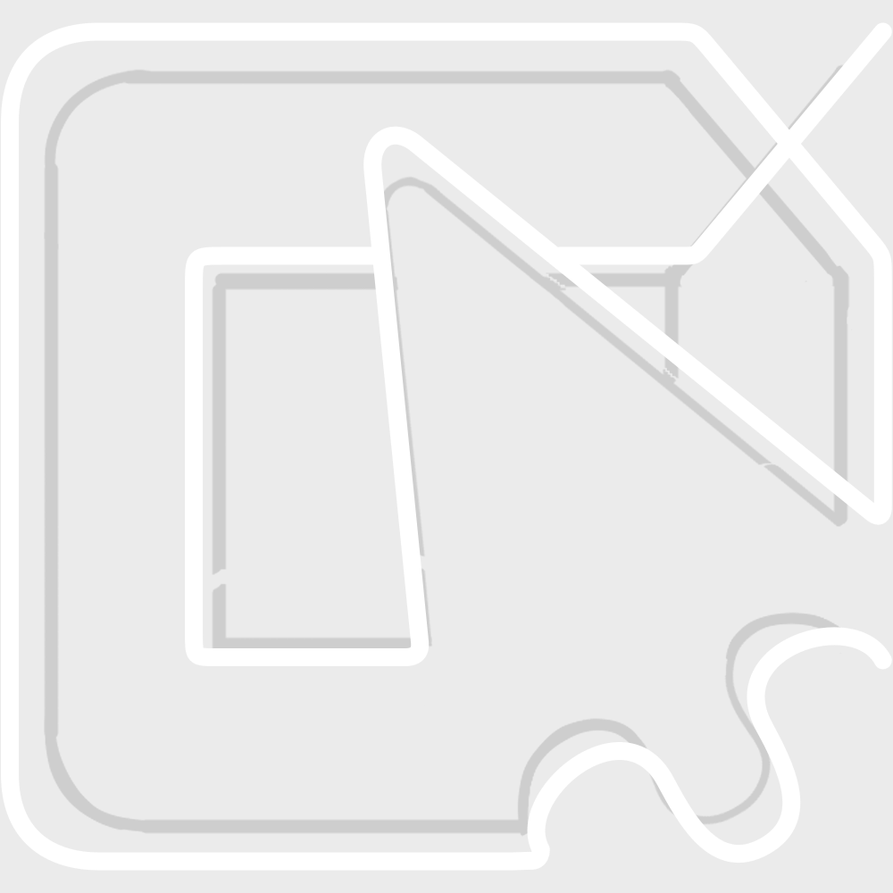
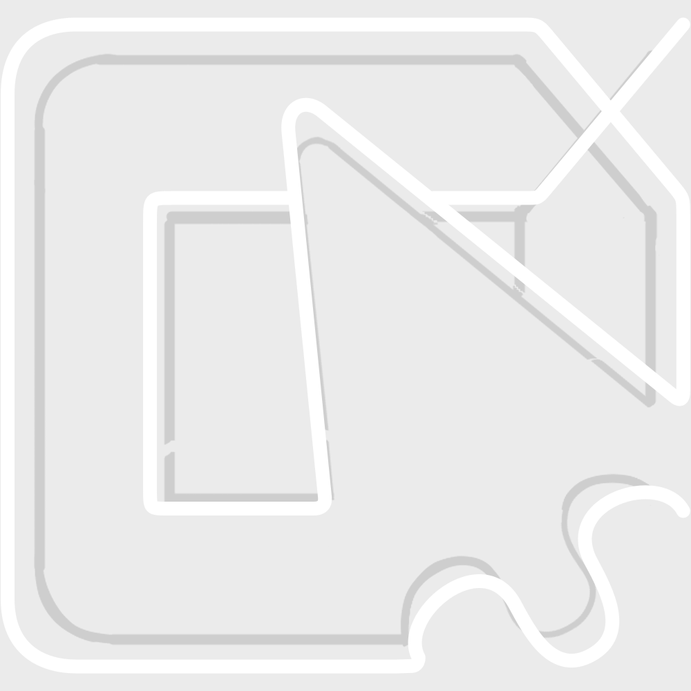

email-inbox-noscroll#
Description#
[email-inbox] No scrolling.
Example utterances#
Find the email by Audrey and forward that email to Orel.
Find the email by Coletta and reply to them with the text “Odio fermentum quam auctor.”.
Find the email by Danice and click the trash icon to delete it.
Find the email by Gerta and click the trash icon to delete it.
Find the email by Goldina and click the star icon to mark it as important.
Utterance fields#
by
message
task
to